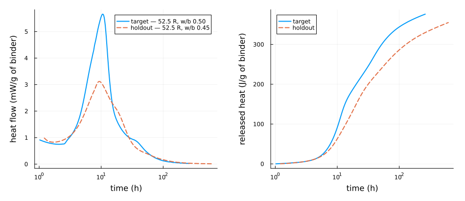
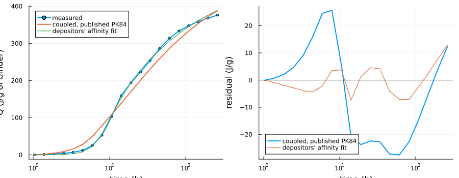
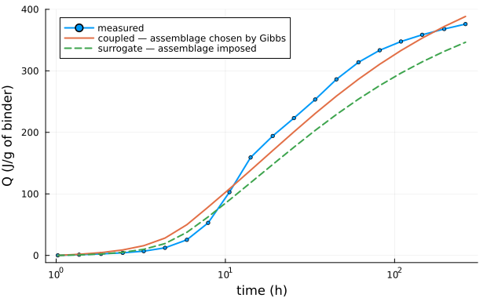
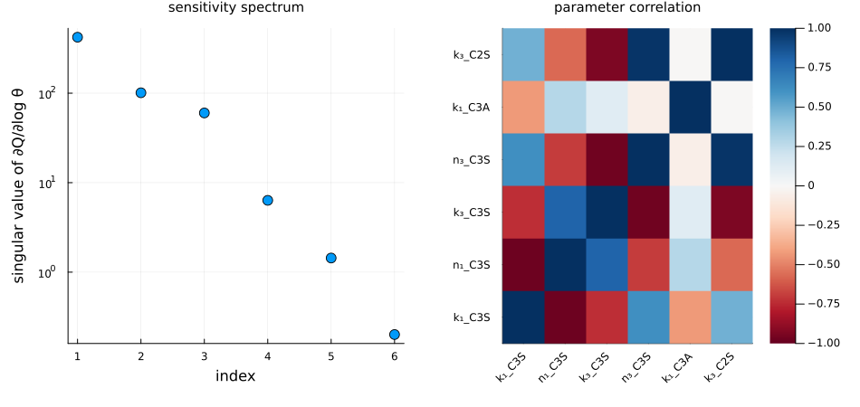
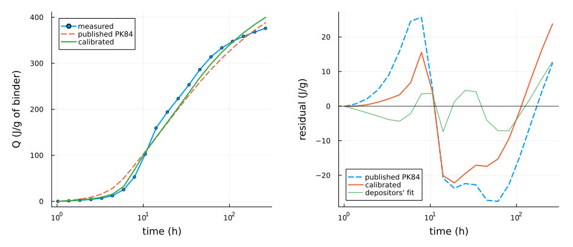
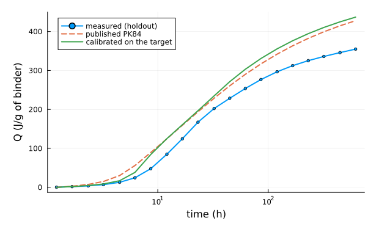

Calibrating hydration kinetics on measured calorimetry
The full Portland cement, through its pore solution runs a complete CEM I forward and reads its calorimetry off a certified replay, with the kinetic parameters Parrott and Killoh published in 1984. Its IONIC_CALIBRATION dictionary is an explicit, deliberately unused hook: "the entry exists so that a study which needs the degrees of hydration to follow a reference curve can scale them without touching the rate laws".
This page closes that loop the other way. Given a measured heat curve of a real CEM I, which kinetic parameters reproduce it — and, the harder question, which of them does the measurement actually determine?
The model lives in scripts/hydration_calibration.jl, which this page includes, so the page and the script cannot drift apart.
ΔₐG⁰, ΔₐH⁰, Cp⁰ and log K come from CEMDATA18 (Lothenbach et al., 2019). They are measured quantities, not free parameters, and moving them to improve a fit would be fabricating chemistry rather than calibrating a model. The Blaine fineness, the water/binder ratio and the temperature are not fitted either, for the plainer reason that the experiment reports them.
1. The data, and the right to use it
The two records are subsets of the Zenodo deposit of (Šmilauer and Reiterman, 2025), licensed CC-BY-4.0, which permits redistribution and adaptation with attribution. The subsets are vendored under data/experimental/; regenerate.jl there rebuilds them byte for byte from the deposit, and LICENSE states the terms.
The depositors ask that their companion article (Šmilauer et al., 2026) be cited. That article is published under CC BY-NC-ND 3.0, so it is cited here and nothing is reproduced from it — no figure, no table, no passage. Only the CC-BY-4.0 data deposit is reused.
using ChemistryLab, DynamicQuantities, OptimaSolver, OrdinaryDiffEq
using Optimization, OptimizationOptimJL, OrderedCollections
using LinearAlgebra, Printf, Statistics, Plots
gr()
include(joinpath(pkgdir(ChemistryLab), "scripts", "hydration_calibration.jl"))
println(CEM_I_TARGET)
println(CEM_I_HOLDOUT)CalorimetryData(Cizkovice 52.5R, w/b 0.50, Blaine 397 m²/kg, 1.0–262.4 h, 485 points)
CalorimetryData(CEM I 42.5R Ladce-415, w/b 0.45, Blaine 415 m²/kg, 1.2–617.5 h, 458 points)Each file states the four things a calibration must take as given rather than fit:
for (label, d) in (("target", CEM_I_TARGET), ("holdout", CEM_I_HOLDOUT))
@printf(
"%-8s %-22s w/b %.2f Blaine %3.0f m²/kg T %.2f K\n",
label, d.meta.cement, d.meta.wb, d.meta.blaine, d.meta.T
)
endtarget Cizkovice 52.5R w/b 0.50 Blaine 397 m²/kg T 293.15 K
holdout CEM I 42.5R Ladce-415 w/b 0.45 Blaine 415 m²/kg T 293.15 KThe heat flow and the released heat, on a log time axis because hydration is a decades-of-time process and a linear axis hides the first day inside a pixel:
th(d) = d.t ./ 3600
p1 = plot(
th(CEM_I_TARGET), CEM_I_TARGET.qdot .* 1000;
label = "target — 52.5 R, w/b 0.50", xscale = :log10,
xlabel = "time (h)", ylabel = "heat flow (mW/g of binder)", lw = 2,
)
plot!(p1, th(CEM_I_HOLDOUT), CEM_I_HOLDOUT.qdot .* 1000;
label = "holdout — 52.5 R, w/b 0.45", lw = 2, ls = :dash)
p2 = plot(
th(CEM_I_TARGET), CEM_I_TARGET.Q;
label = "target", xscale = :log10, xlabel = "time (h)",
ylabel = "released heat (J/g of binder)", lw = 2, legend = :topleft,
)
plot!(p2, th(CEM_I_HOLDOUT), CEM_I_HOLDOUT.Q; label = "holdout", lw = 2, ls = :dash)
plot(p1, p2; layout = (1, 2), left_margin = 8Plots.mm, bottom_margin = 8Plots.mm, size = (950, 410))
Three properties of these records shape everything that follows.
They do not start at zero. Both open after the calorimeter's thermal equilibration, at 1.02 h and 1.21 h. The depositors estimate that 12 J/g had already been released by then. Rather than invent the missing hour — the induction period is precisely what neither the instrument nor a Parrott–Killoh rate law describes — model and record are both referred to the first sample, and the 12 J/g is carried in the metadata for reporting totals.
There is one temperature. Everything was measured at 20 °C. An activation energy is a temperature sensitivity; at a single temperature it is not identifiable, and a fit that reported one would be reporting a number the data cannot contain. Every Ea therefore stays at its published value. A reader who wants a fitted Ea needs a second temperature: (Jägle et al., 2025) is a CC-BY-4.0 route to one, at 20 °C and 35 °C on CEM I 42.5 R and 52.5 R, at the cost of a 341 MB download covering only the first 24 hours.
There is no phase composition. The deposit reports the cement type, the fineness, the w/b ratio and the temperature — not the clinker mineralogy. §5 measures what that costs.
2. The published parameters, untouched
The formulation is the CEM I 52.5 N of (Lavergne et al., 2018) Table 9, the same one the pore-solution page runs: C₃S 65 / C₂S 11 / C₃A 11 / C₄AF 8 by mass of clinker, 4.6 % gypsum, 3.5 % limestone. It was chosen because the target record's w/b of 0.50 and Blaine of 397 m²/kg are within a few percent of the mix it was published for.
target = resample_log(CEM_I_TARGET, N_RESIDUALS_COUPLED)
θ0 = prior_vector()
t0 = time()
Q_prior = forward_Q(θ0, target; mode = :coupled)
t_coupled = time() - t0
@printf("one coupled forward solve on %d instants: %.0f s\n", length(target.t), t_coupled)
@printf(
"Q(%.0f h) = %.1f J/g computed against %.1f J/g measured (%+.1f %%)\n",
target.t[end] / 3600, Q_prior[end], target.Q[end],
100 * (Q_prior[end] / target.Q[end] - 1)
)
@printf("RMSE over the curve: %.2f J/g\n", calorimetry_loss(θ0, target; mode = :coupled))
@printf(
"the depositors' own fitted affinity model, same record: %.1f J/g (%+.1f %%), RMSE %.2f J/g\n",
target.Qref[end], 100 * (target.Qref[end] / target.Q[end] - 1),
sqrt(mean(abs2, target.Qref .- target.Q))
)┌───────────────────────────────────────────────────┐
│ Loading database: data/cemdata18-thermofun.json │
└───────────────────────────────────────────────────┘
┌────────────────────┐
│ Building species │
└────────────────────┘
Progress: 46%|██████████████████████████████████████████████████████████████████████████▉ | ETA: 0:00:00
Progress: 87%|███████████████████████████████████████████████████████████████████████████████████████████████████████████████████████████████████████████▉ | ETA: 0:00:00
Progress: 100%|█████████████████████████████████████████████████████████████████████████████████████████████████████████████████████████████████████████████████████████████████| Time: 0:00:00
┌ Warning: Using arrays or dicts to store parameters of different types can hurt performance.
│ Consider using tuples instead.
└ @ SciMLBase ~/.julia/packages/SciMLBase/y52JD/src/performance_warnings.jl:33
┌ Warning: equilibrium solve returned `MaxIters`; the composition may not be an equilibrium. Set `ChemistryLab.STRICT_CONVERGENCE[] = true` to raise instead.
└ @ ChemistryLab ~/work/ChemistryLab.jl/ChemistryLab.jl/src/equilibrium/equilibrium_solver.jl:329
┌ Warning: 305 equilibrium solve(s) stopped short of the optimizer's tolerance and were used anyway. Judge them on the element balance, not on the retcode: worst |Aₑn − bₑ|∞ over the run was 9.32e-6 mol ON THE ACCEPTED STEPS, i.e. on the trajectory itself; 9.32e-6 mol counting also the Jacobian probes and rejected steps, which never enter the solution. Read the first figure: 1e-10 mol is machine precision whatever the system, while 1e-2 mol against a 0.3 mol sulfate budget is not. How much it matters depends on the RATE LAWS: `bₑ` is integrated from the rates alone, so a law that reads only its own degree of reaction (Parrot-Killoh, Waller) gives a trajectory independent of the speciation, and this figure then bears on the reported composition only — recover that with `speciated_states`, which certifies each instant against the KKT conditions. A law reading log-activities (a saturation ratio) does feed the speciation back into the trajectory, and there this figure is a direct measure of the error. Do NOT simply loosen the optimizer tolerance — on the calcite reference case that degrades the speciation from 4 % to 250 % against Reaktoro.
└ @ KineticsOrdinaryDiffEqExt ~/work/ChemistryLab.jl/ChemistryLab.jl/ext/KineticsOrdinaryDiffEqExt.jl:153
┌ Warning: the dual equilibrium solve did not certify optimality; audit it with `optimality_certificate`.
└ @ ChemistryLab ~/work/ChemistryLab.jl/ChemistryLab.jl/src/equilibrium/dual_solver.jl:178
┌ Warning: 5 of 20 replayed instants could not be certified optimal and fall back to the interior-point composition, at t = [3683.0, 4920.0, 6630.0, 8902.0, 11850.0] s. Audit them with `optimality_certificate`.
└ @ ChemistryLab ~/work/ChemistryLab.jl/ChemistryLab.jl/src/kinetics/kinetics_postprocessing.jl:554
one coupled forward solve on 20 instants: 257 s
Q(262 h) = 388.4 J/g computed against 376.0 J/g measured (+3.3 %)
┌───────────────────────────────────────────────────┐
│ Loading database: data/cemdata18-thermofun.json │
└───────────────────────────────────────────────────┘
┌────────────────────┐
│ Building species │
└────────────────────┘
Progress: 50%|███████████████████████████████████████████████████████████████████████████████▊ | ETA: 0:00:00
Progress: 88%|█████████████████████████████████████████████████████████████████████████████████████████████████████████████████████████████████████████████▉ | ETA: 0:00:00
Progress: 100%|█████████████████████████████████████████████████████████████████████████████████████████████████████████████████████████████████████████████████████████████████| Time: 0:00:00
┌ Warning: Using arrays or dicts to store parameters of different types can hurt performance.
│ Consider using tuples instead.
└ @ SciMLBase ~/.julia/packages/SciMLBase/y52JD/src/performance_warnings.jl:33
┌ Warning: equilibrium solve returned `MaxIters`; the composition may not be an equilibrium. Set `ChemistryLab.STRICT_CONVERGENCE[] = true` to raise instead.
└ @ ChemistryLab ~/work/ChemistryLab.jl/ChemistryLab.jl/src/equilibrium/equilibrium_solver.jl:329
┌ Warning: 305 equilibrium solve(s) stopped short of the optimizer's tolerance and were used anyway. Judge them on the element balance, not on the retcode: worst |Aₑn − bₑ|∞ over the run was 9.32e-6 mol ON THE ACCEPTED STEPS, i.e. on the trajectory itself; 9.32e-6 mol counting also the Jacobian probes and rejected steps, which never enter the solution. Read the first figure: 1e-10 mol is machine precision whatever the system, while 1e-2 mol against a 0.3 mol sulfate budget is not. How much it matters depends on the RATE LAWS: `bₑ` is integrated from the rates alone, so a law that reads only its own degree of reaction (Parrot-Killoh, Waller) gives a trajectory independent of the speciation, and this figure then bears on the reported composition only — recover that with `speciated_states`, which certifies each instant against the KKT conditions. A law reading log-activities (a saturation ratio) does feed the speciation back into the trajectory, and there this figure is a direct measure of the error. Do NOT simply loosen the optimizer tolerance — on the calcite reference case that degrades the speciation from 4 % to 250 % against Reaktoro.
└ @ KineticsOrdinaryDiffEqExt ~/work/ChemistryLab.jl/ChemistryLab.jl/ext/KineticsOrdinaryDiffEqExt.jl:153
┌ Warning: the dual equilibrium solve did not certify optimality; audit it with `optimality_certificate`.
└ @ ChemistryLab ~/work/ChemistryLab.jl/ChemistryLab.jl/src/equilibrium/dual_solver.jl:178
┌ Warning: 5 of 20 replayed instants could not be certified optimal and fall back to the interior-point composition, at t = [3683.0, 4920.0, 6630.0, 8902.0, 11850.0] s. Audit them with `optimality_certificate`.
└ @ ChemistryLab ~/work/ChemistryLab.jl/ChemistryLab.jl/src/kinetics/kinetics_postprocessing.jl:554
RMSE over the curve: 17.45 J/g
the depositors' own fitted affinity model, same record: 388.9 J/g (+3.4 %), RMSE 5.15 J/gThat is worth pausing on. The total heat is already right to a couple of percent, with parameters fitted in 1984 to other cements and no adjustment whatsoever — and closer at the endpoint than the four-parameter empirical model the depositors fitted to this very record. What a calibration has to earn here is therefore not the level but the timing, and that is where the residual lives:
p1 = plot(
th(target), target.Q; label = "measured", xscale = :log10, lw = 2,
xlabel = "time (h)", ylabel = "Q (J/g of binder)", legend = :topleft, marker = :circle,
ms = 2.5,
)
plot!(p1, th(target), Q_prior; label = "coupled, published PK84", lw = 2)
plot!(p1, th(target), target.Qref; label = "depositors' affinity fit", lw = 1.5, ls = :dot)
p2 = plot(
th(target), Q_prior .- target.Q; label = "coupled, published PK84",
xscale = :log10, lw = 2, xlabel = "time (h)", ylabel = "residual (J/g)",
legend = :bottomleft,
)
plot!(p2, th(target), target.Qref .- target.Q; label = "depositors' affinity fit",
lw = 1.5, ls = :dot)
hline!(p2, [0]; label = "", c = :black, lw = 0.7)
plot(p1, p2; layout = (1, 2), left_margin = 8Plots.mm, bottom_margin = 8Plots.mm, size = (950, 410))
3. Why the hydrate assemblage cannot simply be written down
The coupled model costs tens of seconds a solve, almost all of it in the certified replay and the enthalpy sums. A derivative-free search over six parameters needs of the order of a hundred solves, so a cheap stand-in is worth having. The obvious one is to keep the same rate laws and write the hydrate assemblage down by hand, which is what stoichiometric_run does — and what the pore-solution page exists to avoid.
The first attempt at it fails outright, and the failure is instructive. C₃A + 3 Gp + 26 H₂O → ettringite is the textbook reaction, and it is stoichiometrically impossible in this mix: 11 % C₃A demands about 1.1 mol of gypsum per kilogram of binder and 4.6 % gypsum supplies 0.27. A rate law that reads only C₃A does not know that, so it drives the gypsum negative and the enthalpy with it — the released heat came out at 1609 J/g against a measured 376. Writing a reaction down does not make the sulfate balance hold.
So the surrogate sends the aluminate to hydrogarnet instead, which real cement only reaches once the sulfate is gone, and leaves gypsum and limestone inert. What that buys, and what it costs:
Q_surr = forward_Q(θ0, target; mode = :surrogate)
t0 = time(); forward_Q(θ0, target; mode = :surrogate); t_surr = time() - t0
@printf("one surrogate solve: %.3f s — %.0f× cheaper than the coupled model\n",
t_surr, t_coupled / t_surr)
println("\n instant surrogate coupled measured")
for (lab, h) in (("6 h", 6), ("24 h", 24), ("end", 0))
i = h == 0 ? lastindex(target.t) : findfirst(>=(h * 3600 - 1), target.t)
@printf(" %-8s %11.1f %12.1f %12.1f\n", lab, Q_surr[i], Q_prior[i], target.Q[i])
end┌───────────────────────────────────────────────────┐
│ Loading database: data/cemdata18-thermofun.json │
└───────────────────────────────────────────────────┘
┌────────────────────┐
│ Building species │
└────────────────────┘
Progress: 47%|███████████████████████████████████████████████████████████████████████████▌ | ETA: 0:00:00
Progress: 86%|███████████████████████████████████████████████████████████████████████████████████████████████████████████████████████████████████████████▏ | ETA: 0:00:00
Progress: 100%|█████████████████████████████████████████████████████████████████████████████████████████████████████████████████████████████████████████████████████████████████| Time: 0:00:00
┌ Warning: Using arrays or dicts to store parameters of different types can hurt performance.
│ Consider using tuples instead.
└ @ SciMLBase ~/.julia/packages/SciMLBase/y52JD/src/performance_warnings.jl:33
┌ Warning: Using arrays or dicts to store parameters of different types can hurt performance.
│ Consider using tuples instead.
└ @ SciMLBase ~/.julia/packages/SciMLBase/y52JD/src/performance_warnings.jl:33
one surrogate solve: 0.032 s — 7899× cheaper than the coupled model
instant surrogate coupled measured
6 h 62.6 78.6 52.9
24 h 175.8 200.8 223.2
end 346.4 388.4 376.0plot(
th(target), target.Q; label = "measured", xscale = :log10, lw = 2, marker = :circle,
ms = 2.5, xlabel = "time (h)", ylabel = "Q (J/g of binder)", legend = :topleft,
size = (620, 380),
)
plot!(th(target), Q_prior; label = "coupled — assemblage chosen by Gibbs", lw = 2)
plot!(th(target), Q_surr; label = "surrogate — assemblage imposed", lw = 2, ls = :dash)
The surrogate is low, and low by a margin no rate constant is responsible for: Jennite plus portlandite is not the assemblage a cement precipitates, and its enthalpy per mole of alite is not that of the mixture a Gibbs minimization selects. That is a level error, structural and roughly constant in relative terms.
There is a second failure, subtler and worth reporting. Fit the surrogate to the normalized curve Q(t)/Q(t_end) — timing only, where the level error cannot reach — and its parameters run to whatever bounds they are given:
rS = calibrate(
resample_log(CEM_I_TARGET, N_RESIDUALS_SURROGATE);
mode = :surrogate, θ0 = prior_vector(CALIB_SPEC_FULL), spec = CALIB_SPEC_FULL,
maxiters = 800, shape = true,
)
report_fit(rS, resample_log(CEM_I_TARGET, N_RESIDUALS_SURROGATE);
label = "surrogate, shape only, six parameters")┌ Warning: Using arrays or dicts to store parameters of different types can hurt performance.
│ Consider using tuples instead.
└ @ SciMLBase ~/.julia/packages/SciMLBase/y52JD/src/performance_warnings.jl:33
surrogate, shape only, six parameters (surrogate): RMSE 22.59 → 11.55 J/g over 60 instants, 1710 solves, 117.6 s
parameter fitted prior ratio box
k₁_C3S 2.28 1.5 1.52 65 %
n₁_C3S 0.3059 0.7 0.44 1 % ← at a bound, not identified
k₃_C3S 6.316 1.1 5.74 83 %
n₃_C3S 6 3.3 1.82 100 % ← at a bound, not identified
k₁_C3A 0.9269 1 0.93 47 %
k₃_C2S 0.2343 0.2 1.17 56 %
τ_ind 1.026e+04 1.44e+04 0.71 55 %
m_ind 1.743 2 0.87 29 %That is not the data speaking. It says the imposed assemblage produces a curve shape the Parrott–Killoh family cannot match, so the optimizer saturates anything it is handed trying.
Which settles what the surrogate is for. It is not a preconditioner and it is not where the parameters are chosen: an argument about identifiability drawn from a model with the wrong chemistry would be an argument about the wrong model. It is used for exactly two things, both honest — the comparison above, which is the quantitative case for letting a Gibbs minimization pick the assemblage, and the one rate-law property of §4 that does not depend on the assemblage at all. Everything downstream runs on the coupled model.
calorimetry_loss(...; shape = true) is that normalized residual, rescaled by the measured total so it stays readable in J/g. It is kept in the API because it is the right loss whenever a model's level is known to be biased and its timing is not.
4. The candidate parameters, and what is excluded before any fitting
Six candidates, one per mechanism with a distinct signature on the curve: k₁_C3S moves the acceleration, n₁_C3S reshapes the main peak, k₃_C3S and n₃_C3S set where and how hard the deceleration bites, k₁_C3A the sulfate-depletion shoulder, k₃_C2S the multi-day plateau. §5 asks how many of the six the measurement can actually carry; this section rules out what can be ruled out before looking at the data at all.
println(" parameter phase field prior box")
for p in CALIB_SPEC_FULL
@printf(
" %-10s %-7s %-6s %8.4g [%.4g, %.4g]%s\n",
p.name, p.phase, p.field, p.prior, p.lo, p.hi, p.logscale ? " (log)" : ""
)
end parameter phase field prior box
k₁_C3S C3S k₁ 1.5 [0.375, 6] (log)
n₁_C3S C3S n₁ 0.7 [0.3, 1.3]
k₃_C3S C3S k₃ 1.1 [0.1833, 13.2] (log)
n₃_C3S C3S n₃ 3.3 [1.5, 6]
k₁_C3A C3A k₁ 1 [0.25, 4] (log)
k₃_C2S C2S k₃ 0.2 [0.05, 0.8] (log)
τ_ind induction τ 1.44e+04 [720, 8.64e+04] (log)
m_ind induction m 2 [0.8, 4]The exclusions are as much of the design as the inclusions, and each has a reason that is structural rather than empirical.
A uniform per-phase multiplier is excluded because it is exactly redundant. For alite the rate is min(α̇₁, α̇₃), so
\[f \cdot \min(\dot\alpha_1, \dot\alpha_3) = \min(f\dot\alpha_1, f\dot\alpha_3),\]
that is, scaling the phase is scaling k₁ and k₃ together. Fitting the multiplier alongside the rate-law fields would make the problem rank-deficient by construction rather than by accident. Use IONIC_CALIBRATION or the rate-law fields, never both.
k₂_C3S is excluded, but not for the reason usually given. Parrott and Killoh reported no diffusion-controlled stage for C₃S, and parrot_killoh_avrami's docstring repeats it (Lothenbach et al., 2008) — so the expected sensitivity is zero. Measuring it says otherwise:
Checked on the surrogate, and legitimately so: whether a mechanism limits the rate is a property of the rate law, not of the hydrate assemblage.
spec_k2 = [
CalibParameter(:k₁_C3S, "C3S", :k₁, 1.5, 1.5 / 4, 1.5 * 4, true),
CalibParameter(:k₂_C3S, "C3S", :k₂, 0.05, 0.005, 0.5, true),
]
J_k2 = sensitivity_matrix(
[1.5, 0.05], resample_log(CEM_I_TARGET, N_RESIDUALS_SURROGATE);
mode = :surrogate, spec = spec_k2,
)
d_fine = resample_log(CEM_I_TARGET, N_RESIDUALS_SURROGATE)
for (p, col) in zip(spec_k2, eachcol(J_k2))
early = findall(<=(6 * 3600), d_fine.t)
@printf(
" ∂Q/∂log %-9s max |·| = %8.4g J/g (before 6 h: %8.4g)\n",
p.name, maximum(abs, col), maximum(abs, col[early])
)
end┌ Warning: Using arrays or dicts to store parameters of different types can hurt performance.
│ Consider using tuples instead.
└ @ SciMLBase ~/.julia/packages/SciMLBase/y52JD/src/performance_warnings.jl:33
∂Q/∂log k₁_C3S max |·| = 18.2 J/g (before 6 h: 18.2)
∂Q/∂log k₂_C3S max |·| = 2.252 J/g (before 6 h: 0)Not zero: about an eighth of k₁'s influence, and exactly zero only before the first day. The Jander term is α̇₂ = k₂(1-ξ)^{2/3}/(1-(1-ξ)^{1/3}), which falls as ξ grows, so past a high degree of hydration it does become the minimum of the three branches. The published statement describes the 1984 fit's intent; this implementation of it has a diffusion-limited tail.
So k₂_C3S is left out because it is a minor effect competing for a place in a three-dimensional identifiable space — a defensible reason, and a different one from the reason that was expected. Worth the two lines it took to find out.
Gypsum and calcite dissolution are excluded because ionic_reactions deliberately makes them fast, so that sulfate reaches the minimization from the start instead of rate-limiting it. A step that does not limit cannot be calibrated.
5. What the data can constrain
Before fitting anything it is worth asking what six numbers a single heat curve can carry. The answer is a property of the model, so it has to be computed on the coupled model — and that costs 2n + 1 forward solves, thirteen here, a quarter of an hour. This page does not spend it. The call is one line, main() in the script makes it, and what follows renders its stored output:
id = local_identifiability(
prior_vector(CALIB_SPEC_FULL), target; mode = :coupled, spec = CALIB_SPEC_FULL,
)
report_identifiability(id, CALIB_SPEC_FULL)id = MEASURED_IDENTIFIABILITY.candidates
report_stored_identifiability(id, "the six candidates, at the published parameters")the six candidates, at the published parameters — 6 parameters, residual RMSE 26.08 J/g, condition number 2101
singular values: 421.8 101 60.1 6.342 1.438 0.2008
approximate relative standard errors:
k₁_C3S 1754 %
n₁_C3S 1171 %
k₃_C3S 307 %
n₃_C3S 393 %
k₁_C3A 439 %
k₃_C2S 12936 %nm = string.(id.names)
p1 = scatter(
1:length(id.S), id.S; yscale = :log10, label = "", marker = :circle, ms = 6,
xlabel = "index", ylabel = "singular value of ∂Q/∂log θ",
title = "sensitivity spectrum", titlefontsize = 10,
)
p2 = heatmap(
nm, nm, id.correlation; clims = (-1, 1), c = :RdBu, xrotation = 45,
title = "parameter correlation", titlefontsize = 10,
)
plot(p1, p2; layout = (1, 2), size = (950, 450), bottom_margin = 9Plots.mm)
println("how much each parameter moves the curve, and where the information sits:")
for (i, n) in enumerate(id.names)
@printf(
" %-10s ‖∂Q/∂log θ‖ = %9.4g J/g leading-3 weight %5.2f\n",
n, id.column_norms[i], sum(abs2, id.V[i, 1:3])
)
endhow much each parameter moves the curve, and where the information sits:
k₁_C3S ‖∂Q/∂log θ‖ = 48.49 J/g leading-3 weight 0.28
n₁_C3S ‖∂Q/∂log θ‖ = 99.92 J/g leading-3 weight 0.62
k₃_C3S ‖∂Q/∂log θ‖ = 207 J/g leading-3 weight 1.00
n₃_C3S ‖∂Q/∂log θ‖ = 368.3 J/g leading-3 weight 1.00
k₁_C3A ‖∂Q/∂log θ‖ = 28.89 J/g leading-3 weight 0.10
k₃_C2S ‖∂Q/∂log θ‖ = 12.64 J/g leading-3 weight 0.00The singular values span orders of magnitude, with the decisive gap after the third. That is not a defect of the optimizer: it is the physics of the measurement. A single scalar observable, integrated over time, cannot separate six mechanisms that all act on the same curve. What the data determine is three combinations, and the "leading-3 weight" column says where those three live.
The correlation matrix says which combinations, and on this record it is unusually clean. Two pairs are almost perfectly collinear — k₁_C3S with n₁_C3S, and k₃_C3S with n₃_C3S, the latter pair being essentially the whole leading singular direction. Within a pair the measurement sees a combination and not its members, so one per pair is all that can be fitted. Belite sits at a weight of 0.001: over eleven days it is invisible, which is a number rather than an impression.
So the six candidate rate-law parameters collapse to three that the measurement can carry. CALIB_SPEC holds those three plus the two of the dormant period, τ_ind and m_ind, which §3 showed to be a missing mechanism rather than a tunable one; CALIB_SPEC_FULL keeps all six candidates for exactly the analysis above:
println("fitted (CALIB_SPEC):")
for p in CALIB_SPEC
@printf(
" %-10s %-6s prior %8.4g box [%.4g, %.4g]\n",
p.name, p.phase, p.prior, p.lo, p.hi
)
end
println("held at published values: ", join(
string.(setdiff(
getfield.(CALIB_SPEC_FULL, :name), getfield.(CALIB_SPEC, :name)
)), ", "
))fitted (CALIB_SPEC):
k₁_C3S C3S prior 1.5 box [0.375, 6]
k₃_C3S C3S prior 1.1 box [0.1833, 13.2]
k₁_C3A C3A prior 1 box [0.25, 4]
τ_ind induction prior 1.44e+04 box [720, 8.64e+04]
m_ind induction prior 2 box [0.8, 4]
held at published values: n₁_C3S, n₃_C3S, k₃_C2SThe rate constant is the member kept in each pair, and deliberately: an Avrami or power-law exponent is a shape parameter of an empirical fit from 1984, whereas a rate constant is the quantity a different clinker plausibly changes. The third parameter, k₁_C3A, is separately visible — very nearly the fourth singular direction on its own — if weakly.
This is also why every fit below prints each parameter's position in its box. A parameter driven to a bound is not a result: it says the data pushed it as far as they were allowed to and the box, not the measurement, chose the answer.
6. The calibration
A derivative-free search over the coupled model. It is not run in this page: at tens of seconds a solve and of the order of a hundred solves it is an hour of computation, which does not belong in a documentation build. main() in the script runs it; its result is stored as CALIBRATED_THETA and the run that produced it — grid, budget, residual reached — is recorded in CHANGELOG.md under v0.12.0. Reproducing it is one call to main().
Optimization.jl would accept AutoForwardDiff() here and it would not work. The kinetics core is AD-clean in the ODE state and in time — deliberately, because Rodas5P needs the time gradient — but not in the parameters: build_u0 returns a Vector{Float64}, build_kinetics_params casts the temperature, the initial amounts, the stoichiometry and the calorimeter constants to Float64, and under partial equilibrium respeciate! is Float64-only by construction. A dual number baked into a rate closure cannot reach the integrator. AutoFiniteDiff() is the honest backend until that changes, and a finite-difference gradient costs one solve per parameter plus one — which is why NelderMead is the default for the expensive mode.
θ̂ = CALIBRATED_THETA
Q_fit = forward_Q(θ̂, target; mode = :coupled)
@printf("%-12s %10s %10s %8s\n", "parameter", "calibrated", "published", "ratio")
for (p, v) in zip(CALIB_SPEC, θ̂)
@printf("%-12s %10.4g %10.4g %8.2f\n", p.name, v, p.prior, v / p.prior)
end
@printf(
"\nRMSE published %.2f J/g → calibrated %.2f J/g (depositors' fit %.2f J/g)\n",
sqrt(mean(abs2, Q_prior .- target.Q)), sqrt(mean(abs2, Q_fit .- target.Q)),
sqrt(mean(abs2, target.Qref .- target.Q))
)┌───────────────────────────────────────────────────┐
│ Loading database: data/cemdata18-thermofun.json │
└───────────────────────────────────────────────────┘
┌────────────────────┐
│ Building species │
└────────────────────┘
Progress: 50%|████████████████████████████████████████████████████████████████████████████████▌ | ETA: 0:00:00
Progress: 88%|█████████████████████████████████████████████████████████████████████████████████████████████████████████████████████████████████████████████▎ | ETA: 0:00:00
Progress: 100%|█████████████████████████████████████████████████████████████████████████████████████████████████████████████████████████████████████████████████████████████████| Time: 0:00:00
┌ Warning: Using arrays or dicts to store parameters of different types can hurt performance.
│ Consider using tuples instead.
└ @ SciMLBase ~/.julia/packages/SciMLBase/y52JD/src/performance_warnings.jl:33
┌ Warning: equilibrium solve returned `MaxIters`; the composition may not be an equilibrium. Set `ChemistryLab.STRICT_CONVERGENCE[] = true` to raise instead.
└ @ ChemistryLab ~/work/ChemistryLab.jl/ChemistryLab.jl/src/equilibrium/equilibrium_solver.jl:329
┌ Warning: 326 equilibrium solve(s) stopped short of the optimizer's tolerance and were used anyway. Judge them on the element balance, not on the retcode: worst |Aₑn − bₑ|∞ over the run was 8.91e-6 mol ON THE ACCEPTED STEPS, i.e. on the trajectory itself; 8.91e-6 mol counting also the Jacobian probes and rejected steps, which never enter the solution. Read the first figure: 1e-10 mol is machine precision whatever the system, while 1e-2 mol against a 0.3 mol sulfate budget is not. How much it matters depends on the RATE LAWS: `bₑ` is integrated from the rates alone, so a law that reads only its own degree of reaction (Parrot-Killoh, Waller) gives a trajectory independent of the speciation, and this figure then bears on the reported composition only — recover that with `speciated_states`, which certifies each instant against the KKT conditions. A law reading log-activities (a saturation ratio) does feed the speciation back into the trajectory, and there this figure is a direct measure of the error. Do NOT simply loosen the optimizer tolerance — on the calcite reference case that degrades the speciation from 4 % to 250 % against Reaktoro.
└ @ KineticsOrdinaryDiffEqExt ~/work/ChemistryLab.jl/ChemistryLab.jl/ext/KineticsOrdinaryDiffEqExt.jl:153
┌ Warning: the dual equilibrium solve did not certify optimality; audit it with `optimality_certificate`.
└ @ ChemistryLab ~/work/ChemistryLab.jl/ChemistryLab.jl/src/equilibrium/dual_solver.jl:178
parameter calibrated published ratio
k₁_C3S 2.043 1.5 1.36
k₃_C3S 1.583 1.1 1.44
k₁_C3A 0.6873 1 0.69
τ_ind 2.023e+04 1.44e+04 1.40
m_ind 3.559 2 1.78
RMSE published 17.45 J/g → calibrated 13.04 J/g (depositors' fit 5.15 J/g)p1 = plot(
th(target), target.Q; label = "measured", xscale = :log10, lw = 2, marker = :circle,
ms = 2.5, xlabel = "time (h)", ylabel = "Q (J/g of binder)", legend = :topleft,
)
plot!(p1, th(target), Q_prior; label = "published PK84", lw = 2, ls = :dash)
plot!(p1, th(target), Q_fit; label = "calibrated", lw = 2)
p2 = plot(
th(target), Q_prior .- target.Q; label = "published PK84", xscale = :log10, lw = 2,
ls = :dash, xlabel = "time (h)", ylabel = "residual (J/g)", legend = :bottomleft,
)
plot!(p2, th(target), Q_fit .- target.Q; label = "calibrated", lw = 2)
plot!(p2, th(target), target.Qref .- target.Q; label = "depositors' fit", lw = 1.2, ls = :dot)
hline!(p2, [0]; label = "", c = :black, lw = 0.7)
plot(p1, p2; layout = (1, 2), left_margin = 8Plots.mm, bottom_margin = 8Plots.mm, size = (950, 410))
7. The holdout
The one test available here that the fit cannot pass by construction: take the parameters from the target and predict a different record, at a different w/b and a different Blaine fineness, without refitting anything. The only machinery carrying them across is powers_alpha_max(w/b) on the hydration cap and blaine_factor(blaine) on the rate — which is exactly the claim those two corrections make.
holdout = resample_log(CEM_I_HOLDOUT, N_RESIDUALS_COUPLED)
@printf(
"holdout: w/b %.2f (target %.2f), Blaine %.0f (target %.0f) m²/kg, %.0f h\n",
holdout.meta.wb, target.meta.wb, holdout.meta.blaine, target.meta.blaine,
holdout.t[end] / 3600
)
Qh_prior = forward_Q(θ0, holdout; mode = :coupled)
Qh_fit = forward_Q(θ̂, holdout; mode = :coupled)
@printf(" published RMSE %7.2f J/g\n", sqrt(mean(abs2, Qh_prior .- holdout.Q)))
@printf(" calibrated RMSE %7.2f J/g\n", sqrt(mean(abs2, Qh_fit .- holdout.Q)))holdout: w/b 0.45 (target 0.50), Blaine 415 (target 397) m²/kg, 617 h
┌───────────────────────────────────────────────────┐
│ Loading database: data/cemdata18-thermofun.json │
└───────────────────────────────────────────────────┘
┌────────────────────┐
│ Building species │
└────────────────────┘
Progress: 48%|█████████████████████████████████████████████████████████████████████████████ | ETA: 0:00:00
Progress: 87%|███████████████████████████████████████████████████████████████████████████████████████████████████████████████████████████████████████████▉ | ETA: 0:00:00
Progress: 100%|█████████████████████████████████████████████████████████████████████████████████████████████████████████████████████████████████████████████████████████████████| Time: 0:00:00
┌ Warning: Using arrays or dicts to store parameters of different types can hurt performance.
│ Consider using tuples instead.
└ @ SciMLBase ~/.julia/packages/SciMLBase/y52JD/src/performance_warnings.jl:33
┌ Warning: equilibrium solve returned `MaxIters`; the composition may not be an equilibrium. Set `ChemistryLab.STRICT_CONVERGENCE[] = true` to raise instead.
└ @ ChemistryLab ~/work/ChemistryLab.jl/ChemistryLab.jl/src/equilibrium/equilibrium_solver.jl:329
┌ Warning: 314 equilibrium solve(s) stopped short of the optimizer's tolerance and were used anyway. Judge them on the element balance, not on the retcode: worst |Aₑn − bₑ|∞ over the run was 9.65e-6 mol ON THE ACCEPTED STEPS, i.e. on the trajectory itself; 9.65e-6 mol counting also the Jacobian probes and rejected steps, which never enter the solution. Read the first figure: 1e-10 mol is machine precision whatever the system, while 1e-2 mol against a 0.3 mol sulfate budget is not. How much it matters depends on the RATE LAWS: `bₑ` is integrated from the rates alone, so a law that reads only its own degree of reaction (Parrot-Killoh, Waller) gives a trajectory independent of the speciation, and this figure then bears on the reported composition only — recover that with `speciated_states`, which certifies each instant against the KKT conditions. A law reading log-activities (a saturation ratio) does feed the speciation back into the trajectory, and there this figure is a direct measure of the error. Do NOT simply loosen the optimizer tolerance — on the calcite reference case that degrades the speciation from 4 % to 250 % against Reaktoro.
└ @ KineticsOrdinaryDiffEqExt ~/work/ChemistryLab.jl/ChemistryLab.jl/ext/KineticsOrdinaryDiffEqExt.jl:153
┌ Warning: the dual equilibrium solve did not certify optimality; audit it with `optimality_certificate`.
└ @ ChemistryLab ~/work/ChemistryLab.jl/ChemistryLab.jl/src/equilibrium/dual_solver.jl:178
┌ Warning: 4 of 20 replayed instants could not be certified optimal and fall back to the interior-point composition, at t = [4362.0, 6033.0, 8446.0, 11600.0] s. Audit them with `optimality_certificate`.
└ @ ChemistryLab ~/work/ChemistryLab.jl/ChemistryLab.jl/src/kinetics/kinetics_postprocessing.jl:554
┌───────────────────────────────────────────────────┐
│ Loading database: data/cemdata18-thermofun.json │
└───────────────────────────────────────────────────┘
┌────────────────────┐
│ Building species │
└────────────────────┘
Progress: 50%|████████████████████████████████████████████████████████████████████████████████▌ | ETA: 0:00:00
Progress: 88%|█████████████████████████████████████████████████████████████████████████████████████████████████████████████████████████████████████████████▎ | ETA: 0:00:00
Progress: 100%|█████████████████████████████████████████████████████████████████████████████████████████████████████████████████████████████████████████████████████████████████| Time: 0:00:00
┌ Warning: Using arrays or dicts to store parameters of different types can hurt performance.
│ Consider using tuples instead.
└ @ SciMLBase ~/.julia/packages/SciMLBase/y52JD/src/performance_warnings.jl:33
┌ Warning: equilibrium solve returned `MaxIters`; the composition may not be an equilibrium. Set `ChemistryLab.STRICT_CONVERGENCE[] = true` to raise instead.
└ @ ChemistryLab ~/work/ChemistryLab.jl/ChemistryLab.jl/src/equilibrium/equilibrium_solver.jl:329
┌ Warning: 343 equilibrium solve(s) stopped short of the optimizer's tolerance and were used anyway. Judge them on the element balance, not on the retcode: worst |Aₑn − bₑ|∞ over the run was 8.17e-6 mol ON THE ACCEPTED STEPS, i.e. on the trajectory itself; 8.17e-6 mol counting also the Jacobian probes and rejected steps, which never enter the solution. Read the first figure: 1e-10 mol is machine precision whatever the system, while 1e-2 mol against a 0.3 mol sulfate budget is not. How much it matters depends on the RATE LAWS: `bₑ` is integrated from the rates alone, so a law that reads only its own degree of reaction (Parrot-Killoh, Waller) gives a trajectory independent of the speciation, and this figure then bears on the reported composition only — recover that with `speciated_states`, which certifies each instant against the KKT conditions. A law reading log-activities (a saturation ratio) does feed the speciation back into the trajectory, and there this figure is a direct measure of the error. Do NOT simply loosen the optimizer tolerance — on the calcite reference case that degrades the speciation from 4 % to 250 % against Reaktoro.
└ @ KineticsOrdinaryDiffEqExt ~/work/ChemistryLab.jl/ChemistryLab.jl/ext/KineticsOrdinaryDiffEqExt.jl:153
┌ Warning: the dual equilibrium solve did not certify optimality; audit it with `optimality_certificate`.
└ @ ChemistryLab ~/work/ChemistryLab.jl/ChemistryLab.jl/src/equilibrium/dual_solver.jl:178
┌ Warning: 1 of 20 replayed instants could not be certified optimal and fall back to the interior-point composition, at t = [4362.0] s. Audit them with `optimality_certificate`.
└ @ ChemistryLab ~/work/ChemistryLab.jl/ChemistryLab.jl/src/kinetics/kinetics_postprocessing.jl:554
published RMSE 40.74 J/g
calibrated RMSE 47.12 J/gplot(
th(holdout), holdout.Q; label = "measured (holdout)", xscale = :log10, lw = 2,
marker = :circle, ms = 2.5, xlabel = "time (h)", ylabel = "Q (J/g of binder)",
legend = :topleft, size = (620, 380),
)
plot!(th(holdout), Qh_prior; label = "published PK84", lw = 2, ls = :dash)
plot!(th(holdout), Qh_fit; label = "calibrated on the target", lw = 2)
The calibration does not transfer, and that is the result
Read that table before anything else on this page. The calibrated parameters are worse on the holdout than the published ones — the fit improved the record it saw by about a quarter and degraded the record it had not seen by about a sixth.
It would be easy to present this as a near miss and move on. It is not a near miss, it is the honest outcome of a five-parameter fit to one scalar curve, and §5 predicted it. At the optimum k₁_C3S and τ_ind are correlated at 0.994: a longer dormant period followed by a faster rate produces very nearly the same heat curve, so the pair is one direction and not two numbers. The approximate relative standard errors are 981 %, 25 %, 123 %, 389 % and 196 % — only k₃_C3S is determined to better than a factor of a few. What the search found is one or two genuine combinations plus a residual specific to this cement, and it is the cement-specific part that fails to generalize.
So the parameters in CALIBRATED_THETA are not offered as better Parrott–Killoh values for a CEM I. They are offered as a worked demonstration that a heat curve does not determine five kinetic parameters, and that the way to find that out is local_identifiability before the fit rather than a holdout after it.
Two remedies, neither of them a better optimizer:
- Fit fewer. Fix
τ_indfrom the measured position of the main heat-flow peak — an independent, near-direct observation of when the dormant period ends — and fitk₁_C3Sagainst it rather than with it. That breaks the 0.994. - Measure something else. Bound water by thermogravimetry, or phase amounts by QXRD as in (Jansen et al., 2012), constrains the assemblage where a single integrated heat cannot. §10.
In the deposit, the file named 116-CEM I 52.5 R Ladce-415.csv carries Cement name: CEM I 42.5R Ladce-415 internally. Which is right is not resolvable from the deposit, so the holdout may be a different strength class from the one its filename claims — and then its clinker composition differs from the one assumed here, and some part of the discrepancy belongs to that rather than to the kinetics. It weakens the holdout as evidence; it does not rescue the fit, whose own error bars already say the same thing.
7b. The fix that was not run, and how to run it
The failure above is a fitting-procedure failure, and three ways out were considered. Two were tried and are recorded here as negative results; the third is implemented but deliberately not executed, because it is an overnight computation and this page has to build.
Two that were tried and do not work
Adding the heat flow to the loss. The reasoning looked sound — cumulative heat integrates the peak position away, so Q alone discards the timing. It is false, and three experiments were needed to see why, which is worth setting out because the first two explanations were wrong.
| loss | grid | RMSE on Q | corr(τ_ind, k₁_C3S) | fitted τ |
|---|---|---|---|---|
Q only | 60 pts | 24.4 | 0.9815 | 3.1 h |
Q + model q̇ | 60 pts | 27.6 | 0.9940 | 5.3 h |
Q + matched slopes | 60 pts | 27.6 | 0.9941 | 5.3 h |
Q only | 300 pts | 24.6 | 0.9815 | 3.1 h |
Q + instrument q̇ | 300 pts | 27.8 | 0.9942 | 5.2 h |
Q + instrument q̇, w = 3 | 300 pts | 28.5 | 0.9936 | 5.4 h |
The first explanation was discretization: heat_release returns q̇ as a centered finite difference of Q over the output grid, which near the 10-hour peak is spaced 0.91 h apart, so the model's q̇ is a smeared version of what the instrument resolves at 77 s. Matching the operators — differencing the measurement the same way, grid_slope — changed nothing, because grid_slope is a linear map on the same numbers: a residual on the differenced curve is a linear combination of the residuals on Q, so it re-weights information instead of adding any.
The second explanation was the grid. Using the instrument's own q̇ on 300 points, where the spacing near the peak is 0.24 h, changed nothing either.
So the conclusion is stronger than a failed experiment: the τ_ind-k₁_C3S degeneracy is structural in the rate law. Both act on the same feature of the curve — when, and how fast, the acceleration happens — and calorimetry cannot separate them, integral or differential, coarse or dense. No weighting of a single scalar observable will.
There is a positive result inside the same table. Every flow-informed fit puts τ at 5.2-5.4 h where the Q-only fit says 3.1 h, and the coupled Q-only fit independently gives 5.6 h. Three routes agree on a dormant period of five to five and a half hours, and the Q-only surrogate is the outlier. So the flow does determine the dormancy timescale, at the price of the Q residual and without decorrelating τ from k₁. That is the evidence behind the round τ = 5 h that ionic_hydration.jl uses as its uncalibrated default.
Pinning τ_ind from the measured peak. peak_time puts the main heat-flow peak at 10.6 h. Fixing τ = 0.55 × t_peak = 5.8 h and fitting the other four gave 28.9 J/g against 24.4, with m_ind at its floor, k₃_C3S at its ceiling and a condition number of 10¹⁸ — numerically singular. And the factor 0.55 was never independent: it was chosen against the τ of the coupled fit while the surrogate's own optimum wants 3–5 h, so the apparent agreement compared two different models. A defensible version would invert the model's own peak position as a function of τ rather than use a factor at all.
The one that should work, and exactly how to launch it
Fit one parameter set to many records. The deposit holds fourteen plain CEM I records — CEM_I_DEPOSIT_RECORDS lists them with their w/b, fineness and duration — across five plants and four strength classes. The parameter count stays at five while the data multiplies fourteen-fold, so the τ–k₁ degeneracy is constrained by fourteen peak positions instead of one, and transferability becomes what is being optimized rather than what is tested afterwards.
multirecord_loss and calibrate_multirecord implement it. multirecord_recipe prints the cost and the launch sequence:
multirecord_recipe()Joint fit over 14 records, 20 instants, 120 iterations
one solve ≈ 35 s (measured, two cores)
one evaluation ≈ 490 s (14 records)
≈204 evaluations ⇒ ≈ 27.8 h wall clock
Step 1 — vendor the records. `data/experimental/regenerate.jl` holds a
`RECORDS` list of (source stem, output stem, role) triples; extend it
with the stems of `CEM_I_DEPOSIT_RECORDS` and run:
julia data/experimental/regenerate.jl
It downloads the CC-BY-4.0 deposit once and writes one CSV per record.
Step 2 — load them and launch. Four lines:
records = [resample_log(read_calorimetry(p), N_RESIDUALS_COUPLED)
for p in readdir(CALORIMETRY_DIR; join = true)
if endswith(p, ".csv")]
r = calibrate_multirecord(records; maxiters = 120)
Step 3 — read the result the way §5 of the page reads a fit:
report_fit(r, records[1]; label = "joint")
id = local_identifiability(r.θ, records[1]; mode = :coupled)
The number to watch is not the residual. It is whether
corr(τ_ind, k₁_C3S) has come down from 0.994 — that is what fourteen
different peak positions are supposed to buy, and if it has not, the
degeneracy is structural and a second observable is the only way out.
Run it detached; it outlives a terminal session:
nohup julia --project=scripts -e 'include("scripts/hydration_calibration.jl");
multirecord_recipe()' > joint.log 2>&1 &Fourteen records are not one cement measured fourteen times. Five plants, four strength classes, w/b from 0.40 to 0.50, fineness from 250 to 440 m²/kg. blaine_factor and powers_alpha_max are meant to carry a rate law across the last two; the clinker composition they cannot carry, because it differs between plants and the deposit does not report it. So a joint fit estimates one kinetic parameter set for fourteen different clinkers, and the composition scatter is absorbed into the kinetics.
That is a real weakness. It is preferable only because the alternative — one parameter set fitted to one record — is the thing that already failed to transfer, and because the diagnostic to check is specific: whether corr(τ_ind, k₁_C3S) comes down from 0.994. If it does not, the degeneracy is structural, and no amount of calorimetry will fix it — a second observable will, which is §10.
8. What the composition assumption costs
The deposit gives no mineralogy, so a composition was supplied. The consequence is exact rather than vague: a heat curve constrains the product of a phase fraction and its reaction rate, never the two apart. Perturbing the alite content and looking at what moves makes that concrete.
@printf(
"C₃S 0 %% → C₃S %.3f Q(end) %.1f J/g RMSE %.2f J/g (the fit of §6)\n",
CALIB_CLINKER.C3S, Q_fit[end], sqrt(mean(abs2, Q_fit .- target.Q))
)
for δ in (-0.20, 0.20)
c = CALIB_CLINKER.C3S * (1 + δ)
rest = 1 - c
scale = rest / (1 - CALIB_CLINKER.C3S)
clinker = (
C3S = c, C2S = CALIB_CLINKER.C2S * scale,
C3A = CALIB_CLINKER.C3A * scale, C4AF = CALIB_CLINKER.C4AF * scale,
)
run = run_ionic_hydration(;
wb = target.meta.wb, clinker, gypsum = CALIB_GYPSUM, filler = CALIB_FILLER,
blaine = target.meta.blaine * u"m^2/kg", tend = target.t[end],
pk_params = apply_parameters(θ̂),
)
_, Q, _ = heat_release(run.sol, run.kp; times = target.t)
@printf(
"C₃S %+3.0f %% → C₃S %.3f Q(end) %.1f J/g RMSE %.2f J/g\n",
100δ, c, Q[end] / 1000, sqrt(mean(abs2, Q ./ 1000 .- target.Q))
)
endC₃S 0 % → C₃S 0.650 Q(end) 399.7 J/g RMSE 13.04 J/g (the fit of §6)
┌───────────────────────────────────────────────────┐
│ Loading database: data/cemdata18-thermofun.json │
└───────────────────────────────────────────────────┘
┌────────────────────┐
│ Building species │
└────────────────────┘
Progress: 51%|█████████████████████████████████████████████████████████████████████████████████▉ | ETA: 0:00:00
Progress: 88%|█████████████████████████████████████████████████████████████████████████████████████████████████████████████████████████████████████████████▉ | ETA: 0:00:00
Progress: 100%|█████████████████████████████████████████████████████████████████████████████████████████████████████████████████████████████████████████████████████████████████| Time: 0:00:00
┌ Warning: Using arrays or dicts to store parameters of different types can hurt performance.
│ Consider using tuples instead.
└ @ SciMLBase ~/.julia/packages/SciMLBase/y52JD/src/performance_warnings.jl:33
┌ Warning: equilibrium solve returned `MaxIters`; the composition may not be an equilibrium. Set `ChemistryLab.STRICT_CONVERGENCE[] = true` to raise instead.
└ @ ChemistryLab ~/work/ChemistryLab.jl/ChemistryLab.jl/src/equilibrium/equilibrium_solver.jl:329
┌ Warning: 311 equilibrium solve(s) stopped short of the optimizer's tolerance and were used anyway. Judge them on the element balance, not on the retcode: worst |Aₑn − bₑ|∞ over the run was 9.81e-6 mol ON THE ACCEPTED STEPS, i.e. on the trajectory itself; 9.81e-6 mol counting also the Jacobian probes and rejected steps, which never enter the solution. Read the first figure: 1e-10 mol is machine precision whatever the system, while 1e-2 mol against a 0.3 mol sulfate budget is not. How much it matters depends on the RATE LAWS: `bₑ` is integrated from the rates alone, so a law that reads only its own degree of reaction (Parrot-Killoh, Waller) gives a trajectory independent of the speciation, and this figure then bears on the reported composition only — recover that with `speciated_states`, which certifies each instant against the KKT conditions. A law reading log-activities (a saturation ratio) does feed the speciation back into the trajectory, and there this figure is a direct measure of the error. Do NOT simply loosen the optimizer tolerance — on the calcite reference case that degrades the speciation from 4 % to 250 % against Reaktoro.
└ @ KineticsOrdinaryDiffEqExt ~/work/ChemistryLab.jl/ChemistryLab.jl/ext/KineticsOrdinaryDiffEqExt.jl:153
┌ Warning: the dual equilibrium solve did not certify optimality; audit it with `optimality_certificate`.
└ @ ChemistryLab ~/work/ChemistryLab.jl/ChemistryLab.jl/src/equilibrium/dual_solver.jl:178
┌ Warning: 5 of 20 replayed instants could not be certified optimal and fall back to the interior-point composition, at t = [3683.0, 4920.0, 6630.0, 8902.0, 524100.0] s. Audit them with `optimality_certificate`.
└ @ ChemistryLab ~/work/ChemistryLab.jl/ChemistryLab.jl/src/kinetics/kinetics_postprocessing.jl:554
C₃S -20 % → C₃S 0.520 Q(end) 388.0 J/g RMSE 15.28 J/g
┌───────────────────────────────────────────────────┐
│ Loading database: data/cemdata18-thermofun.json │
└───────────────────────────────────────────────────┘
┌────────────────────┐
│ Building species │
└────────────────────┘
Progress: 51%|██████████████████████████████████████████████████████████████████████████████████▋ | ETA: 0:00:00
Progress: 88%|█████████████████████████████████████████████████████████████████████████████████████████████████████████████████████████████████████████████▉ | ETA: 0:00:00
Progress: 100%|█████████████████████████████████████████████████████████████████████████████████████████████████████████████████████████████████████████████████████████████████| Time: 0:00:00
┌ Warning: 266 equilibrium solve(s) stopped short of the optimizer's tolerance and were used anyway. Judge them on the element balance, not on the retcode: worst |Aₑn − bₑ|∞ over the run was 8.78e-6 mol ON THE ACCEPTED STEPS, i.e. on the trajectory itself; 8.78e-6 mol counting also the Jacobian probes and rejected steps, which never enter the solution. Read the first figure: 1e-10 mol is machine precision whatever the system, while 1e-2 mol against a 0.3 mol sulfate budget is not. How much it matters depends on the RATE LAWS: `bₑ` is integrated from the rates alone, so a law that reads only its own degree of reaction (Parrot-Killoh, Waller) gives a trajectory independent of the speciation, and this figure then bears on the reported composition only — recover that with `speciated_states`, which certifies each instant against the KKT conditions. A law reading log-activities (a saturation ratio) does feed the speciation back into the trajectory, and there this figure is a direct measure of the error. Do NOT simply loosen the optimizer tolerance — on the calcite reference case that degrades the speciation from 4 % to 250 % against Reaktoro.
└ @ KineticsOrdinaryDiffEqExt ~/work/ChemistryLab.jl/ChemistryLab.jl/ext/KineticsOrdinaryDiffEqExt.jl:153
C₃S +20 % → C₃S 0.780 Q(end) 403.4 J/g RMSE 12.14 J/gA twenty-percent change in the alite content — far more than the uncertainty on a real Bogue or QXRD analysis — moves the fit by a modest amount, because the calibrated rates absorb most of it. Read the right way round, that is the limitation: the fitted numbers are rates given this composition, and they are not transferable to a cement whose mineralogy is known to be different. A reader who has an oxide analysis should go through the Bogue calculation instead of accepting this default.
9. Doing this with your own data
Three steps, and no part of the machinery is specific to these two records.
- Write a CSV in the format documented in
data/experimental/README.md:#comment lines carrying at leastblaine,wbandtemperature, then a table headedtime_h,heat_flow_W_per_g,heat_J_per_g. A fourth column, if present, is read as somebody else's fitted curve and never as data. - Point
read_calorimetryat it. That is the whole seam. Everything downstream readsdata.meta. - Edit
CALIB_SPEC. Each entry names a phase, a Parrott–Killoh field, a prior and a box. Add or remove rows; nothing else needs to change.
my_data = read_calorimetry(
joinpath(CALORIMETRY_DIR, "smilauer2025-116-cemI-52.5R-ladce.csv")
)
my_spec = [
CalibParameter(:k₁_C3S, "C3S", :k₁, 1.5, 1.5 / 4, 1.5 * 4, true),
CalibParameter(:k₃_C3S, "C3S", :k₃, 1.1, 1.1 / 4, 1.1 * 4, true),
]
my_target = resample_log(my_data, 40)
r_mine = calibrate(
my_target; mode = :surrogate, θ0 = prior_vector(my_spec),
spec = my_spec, maxiters = 300, shape = true,
)
report_fit(r_mine, my_target; label = "two rate constants, surrogate, shape only")┌ Warning: Using arrays or dicts to store parameters of different types can hurt performance.
│ Consider using tuples instead.
└ @ SciMLBase ~/.julia/packages/SciMLBase/y52JD/src/performance_warnings.jl:33
two rate constants, surrogate, shape only (surrogate): RMSE 19.07 → 9.09 J/g over 40 instants, 274 solves, 13.9 s
parameter fitted prior ratio box
k₁_C3S 0.6936 1.5 0.46 22 %
k₃_C3S 1.823 1.1 1.66 68 %That runs on the surrogate and on shape alone, because it is a page and has to finish. A real study replaces mode = :surrogate, shape = true with mode = :coupled and waits — and, before doing so, runs local_identifiability on the candidate set, because the number of parameters a heat curve supports is a property of the curve and will not be three for everybody.
If your data span more than one temperature, the activation energies become identifiable and belong in CALIB_SPEC — add CalibParameter(:Ea_C3S, "C3S", :Ea, 42_000.0, 20_000.0, 70_000.0, true) and give calorimetry_loss a sum over records rather than one. That is the single most valuable extension to this page, and it is blocked only by data, not by the code.
10. Limitations, each with its cause
- The composition is assumed, because the deposit does not report it. Only the products of a rate and a phase fraction are identifiable. §8 measures the cost.
- The activation energies are not fitted, because one temperature cannot determine a temperature sensitivity. They stay at published values.
- There is no parameter-space automatic differentiation, because the kinetics core casts to
Float64inbuild_u0(kinetics_problems.jl), inbuild_kinetics_params, in the surface-area constructors ofkinetics_reactions.jl, and insystem_enthalpy; andrespeciate!isFloat64-only by construction. The outer loop is derivative-free or finite-difference in consequence, not by preference. - The errors are linearized at one point.
local_identifiabilityreportsσ√diag((JᵀJ)⁻¹)at the optimum, which says which numbers deserve to be quoted — not a confidence interval. A profile likelihood would, at a hundred times the cost. - The heat is
heat_release, nevercumulative_heat. Under partial equilibrium the hydrates are precipitated by the Gibbs minimization, and only the enthalpy difference between certified states sees their heat;cumulative_heatintegrates the heat of the kinetic reactions, which here is the heat of dissolution alone. The two agree in the stoichiometric formulation and must not be interchanged in the coupled one. - Five parameters against one scalar observable, three rate constants and the two of the dormant period. §5 is not a formality: the six rate-law candidates support three combinations, the two exponents dropped are not "known" but invisible here, and §7 shows what happens when the dormant period's two are fitted alongside a rate they are collinear with. If a fit is wanted that determines parameters individually rather than in combination, the answer is a second observable — bound water by thermogravimetry, phase amounts by QXRD as in (Jansen et al., 2012) — not a larger
CALIB_SPEC. - The page costs several minutes to build. Six coupled forward solves for the sensitivity in §5, one each for the prior and the fit, two for the holdout and two for the composition sensitivity, at tens of seconds apiece. That is the price of a diagnostic computed rather than quoted.